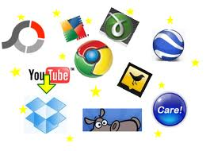
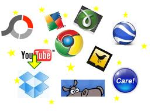

UsToDo is an app which brings together information and applications of all kinds to help you automate your life. A set of user interfaces to access a database and messaging subsystem. At the core of UsToDo are text records containing raw data such as your personal notes and reminders, as well as annotations for external content. Text records contain nearly anything and everything you care to store. Records can have structure, or can have none. Records can contain links or not.
A primary goal is to make both read and write operations (saving and retrieving and organizing of records) as simple and quick and useful as possible. Integrates document management, records management, email processing. UsToDo can be used indvidually or in a project/publishing/communications sense with friends, family, peers ... anyone. UsToDo "UI" leverages touch points range from browser plugin and smart-phone web app to email and text messaging. Dashboard UI efficiency comes from novel ways of using the web browser (address bar) as a kind of editor, A single mechanism (text-based commands) as a point of entry into many applications, data types, and data sources. Software engineers contrast rich user interfaces with command prompt... this is kind of command prompt built into ... Automate and organize your information and tasks such as: save or open a web link, document pointer, or app, browse and process email, send a text message, call a friend about a project, search or deep link into a web site, save or find a note or journal entry. Fast "in-line" save and search of text records, and treating your record set and user interface as a
Associative database.
You submit commands to do things like access your Amazon account, remember products you have been researching, edit your soccer schedule, investigate a health issue on Bing or WebMD, process your email, find and open a file or folder on your hard drive, create a reminder or calendar item, execute a custom script record, and more. UsToDo is not intended as a replacement for existing ways you save documents and clippings, but as an integration point - a productivity tool to automate, organize, and schedule many of your web, email, computer, and peer interactions. UsToDo provides you a browsable catalog of search-pointers to your information, helping you store and organize records with minimal effort. At one level, UsToDo is a too for remembering the little idiosyncrasies of computer and device applications and settings. Data entry and retrieval are as easy and ubiquitous as possible through use of text commands entered through your browser address bar (with UsToDo search as an optional default command) or through a thin web application that works across your devices and applications including as input/output points: email, browser (both command line and web app as mentioned), and text messaging. Gradually records can be contextualized into workflows, dashboards, checklists, and data for all of your life's multiple independent projects at hand.
Records can range in size and complexity from personal tid bits: doctor names, a dream, movies seen - to larger notes and documents like a mortgage closing statement. Each record has a timestamp, is sharable, can be long or short, may contain links or not, can contain tags or not, and can be structured like a form or not.
Here is a screen shot showing UsToDo search results for the word 'bicycle'. A search result is a time-ordered list of records, one record per line (the alternating black and grey is just a visual aid to separate records). The list is an important concept in that much of the editing in UsToDo would be of list-oriented collections of data about a given topic, for example the list of all hot-keys and help documents for a given software app. The records you search are yours as well as those that others have shared with you. Depending on how much organization you want to apply - records and tags can reflect you life's projects, and signal you with relevant information in time and in context. Regardless how you use it, UsToDo at its root is simply a text record database.
{kind=link}
Commands invoke one of four functions: create a record, query/view records, update/delete records, or "run" - which means to execute a record or user input as a hyperlink or to invoke it as a program. Example commands are shown in this dropdown as found in context here. Commonly used commands include: 'w' to write (save) a record, 'g' to search Google, 'h' to "hot link" to the first web site in an UsToDo result record set, and 'u' (the default) to search UsToDo. You can submit these commands to UsToDo via a rich web app, email, texting, browser (address bar), or phone app - with results delivered or actions performed according to the command as well as user input medium.
{kind=link}
Tags are key words that you optionally designate as important within a record - and records of importance list will tend to have tags. Tag words are part of the text record and help to define lists.
The record "purchase history / buy / bike bicycle trek 4500 / oct 2011 - Johann Sweitzer paid $550 cash burlington" has three tags: 'purchase history', 'buy', and 'bike bicycle trek 4500' - tags are delineated by ' / '. A set of tags defines a Topic, a kind of category or document list name. Tags and topics can be searched separately and have special meaning for indexing and organizing. New topics can be created on the fly by simply adding a word to your record. Existing tags and topics can be reused in future record creates. A list is a set of records you declare as such. Records with the same or overlapping tags can constitute a list, or you can hand select records for addition to a list. Lists are integrated with external editors such as Google Docs and Microsoft Word - allowing you to edit a topic in other user interfaces, while retaining or managing that list as an UsToDo object.
Primary goals of the system are:
- Easy record create, e.g. "embedded" - sms, email, browser plugin
- Information at the fingertips - minimize time and keystrokes to get to the all and only the data you need
- Compact embedded UI (just one input field for both search and save across apps and across browser/email/texting)
- Flexible organization scheme including tags and priorities
- End user extensibility via commands and scripts and via custom data structures and workflows
- Record sharing with individuals or groups, allowing joint authorship and publishing.
We use the term "Us" in UsToDo is in the sense that, when you share a record (and we hope you will), you and your cohorts become a group: Us. And we use the term "To Do" is in the sense that UsToDo provides you relevant and actionable information "to do" across all your electronic milieu.
To use UsToDo, you log in at UsToDo.com. Currently, accounts are by invitation only as we develop and scale up the system. If you are interested in early access or to get on a mailing list for future info, please email ustodo.com@gmail.com.
Thank you for taking this time to learn about UsToDo. We hope to pay you back for this time many times over in the future! (further technical details)
Sharable personal information filtering and retrieval
Email processing and (group) schedule automation
Web Mind Coordination Toolkit
App Integration Engine. Notes Network Platform.
App Integration. Records management. Email automation.
Escape the inbox
Individual or group usage
Take control of your information
Intuitive record save and share service
Computer-aided multitasking
Attention Manager. Executive Function. Cognitive ecosystem.
Manage your attention across all of your information sources
Automate your life. ~ A home for your stickies
Stickie Note Blotter Journal
Schedule yourself and share snippets and process email with others on a programmable messaging platform.
A time-word-topic pivot "document synthesizer"
No more application silos
Priority Hierarchy Mind
Some people got a lotta stuff to save
Skylike Mind
Records Management
Launch Engine
A fusion of Art and Science
Your mind in bits
A place to look at art
Priority Hierarchy (tm)
a Groovy/Json/MongoDB command processor and programming environment. Everycommand is a plugin including UsToDo itself. A REPL.
A web meta-application integration email task-conversation illocution engine.
Manage all your applications and data from one simple user interface.
A resting place and productivity space for mind, data, fingers.
A Way to Wrap your mind around it all
Your personal semantic web
You install your own groovy code and become your own command processor - the form is always the ustodo command processor but the command is still run as hosted on UsToDo platform - html ISP generator
Personalized enrichment of records data - semantic and syntactic attributes (see HTML5 spec)
Annotate and browse your links
A Way to Keep Track of it all. Personal workflow engine.
Mini Me - Junior Producer. Your mind in a database.
Mind Blotter. Internet switchblade.
Play well with others
Stickies, notes, email, documents, calendar, ...
Schedule. Prioritize. Remind
A single point of launch entry into all your links, apps, data types and sources. Integrates document management with record-keeping.
Shared record and record set authoring.
Coordinate. Share. Publish.
Database. Programmable. Web service.

 
